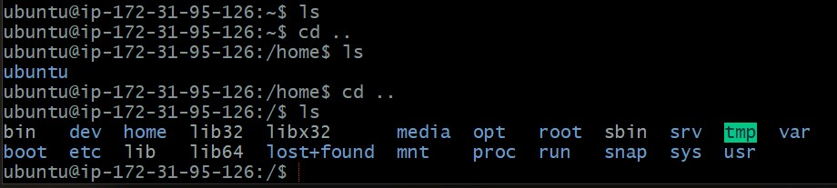

想把自己的部署過程紀錄下來。
簡述
我參考的文章是這篇：[ 紀錄 ] 部屬 AWS EC2 雲端主機 + LAMP Server + phpMyAdmin。這是我覺得寫的最清楚的一篇，如果看不懂我的可以看它的就好。
至於這篇記錄可以簡單分成以下幾個重點：
- 開啟 AWS 的虛擬主機服務
- 連線到虛擬主機，並設定作業環境（LAMP）
- 買網域，然後把網域和 IP 位址串起來
- 過程中碰到的錯誤處理
另外標題也說了，這篇主要是以紀錄性質為主，所以我不會著墨太多在一些細節上，不懂的部分你還是得靠自己上網查資料，總之加油囉！
第一步：開通 AWS 虛擬主機
註冊 AWS 帳號
沒錯，我在一開始就卡關了，因為手機驗證一直收不到驗證碼。另外還因為一直重新發送驗證碼太多次，害自己的帳號被 ban 掉：

後來聯繫客服，但等了 2 天都沒得到回應：
簡單來說，這個問題出在「電信行」的關係，因為我的手機是台灣之星所以才收不到。
總之最後決定重新辦一個新的帳號，並且跟家人借手機（台哥大），最後不到幾分鐘就解決這問題了。
所以呢，如果你的手機電信是台灣之星：
- 建議直接換一支手機來取得驗證碼
- 建議直接換一支手機來取得驗證碼
- 建議直接換一支手機來取得驗證碼
不然真的會被搞很久。
推薦閱讀：AWS Startups AWS Identity aws「Amazon web services」註冊電話驗證碼遲遲未收到？！
選虛擬機器
這邊就按照教學選擇 「Ubuntu Server 20.04 LTS (HVM), SSD Volume Type」
還蠻有趣的，真的好像在選主機一樣。
選擇方案
一樣按照教學選擇有「綠色標章」的免費方案：
細節設定
直接下一步
添加 Storage
直接下一步
添加 tag
直接下一步
設定安全群組
附註：仔細看會發現我這邊選成兩個 HTTP 了，這樣會有問題，所以選的時候要記得再確認一下。
if you want to set up a web server and allow Internet traffic to reach your instance, add rules that allow unrestricted access to the HTTP and HTTPS ports
簡單來說這邊是要設定「你想怎麼連到這台機器」。預設只有 SSH，所以你必須自己加上 HTTP 和 HTTPS 這兩個，這樣之後才有辦法用瀏覽器來連。
有趣的是這邊可以順便複習一下網路的知識，像圖片裡有出現 TCP 協議 和 port 這些專有名詞。雖然這邊的值是自動帶入而且不能改，但至少你能大概看懂這邊在設定什麼。
最後檢查
就跟你網購買東西結帳的概念一樣，最後都會讓你確認一下你剛剛的選擇和設定：
設定金鑰（key pair）
要連到這台機器的話必須透過 AWS 的公鑰（public key）和自己手上的私鑰（private key）。所以這邊要做設定。
下面有提醒你，設定好之後記得把私鑰下載到電腦裡保存，不然之後就沒辦法下載了。另外這邊也看到以前學的東西「RSA」，一種非對稱式加密的方法。
總之呢，確保私鑰下載完後就可以進到下一步了。
建立成功
看到這畫面就代表成功了：
接著案右下角的「View Instance」。（這邊截圖截不到，但你滾軸往下滑就會看到了）
取得 IP 位址
到這裡就已經完成主機的啟動囉！
回主控台可以看到自己 server 的 Public IPv4 位址，記起來就對了。
第二步：連到虛擬主機和設定環境（LAMP）
用 SSH 來連線

按下 conn，接著會跳出這畫面：
這邊有提供不同的選項來連線，但這邊會用 SSH 的方式來做。所以接下來打開你的 CLI，然後按照圖片的指示一步一步來。
1 | chmod 400 "<私鑰檔案路徑>" |
chmod（change mode）是 Linux 的指令，用來設定一個「檔案權限」，像是誰可以 read 啦、write 啦等等之類的。
所以簡單來說這邊是在設定「只有 user 可以 READ」這個私鑰檔案。詳細可以參考這個網站
接著：
1 | ssh -i "<私鑰檔案路徑>" ubuntu@ec2-< IPv4 位置>.compute-1.amazonaws.com |
附註：-i 是 identity_file 的意思，所以後面才接私鑰檔案。
看到 welcome… 就代表連線成功了：
設定 LAMP
接下來要來對這台主機設定伺服器環境：LAMP（Linux + Apache + MySQL + PHP）
附註：注意現在的主機是 Ubuntu，也就是 Linux 的環境，所以指令會跟一般你在 windows 上用的不一樣。（這邊也能明顯感受到你真的在操作遠端的主機，輸入指令都會卡卡的）
- 更新 Ubuntu 系統
1 | sudo apt update && sudo apt upgrade && sudo apt dist-upgrade |
跑到一半時會跳出需要多少空間的訊息，問你要不要繼續？輸入 y 就好。
- 安裝 tasksel
1 | sudo apt install tasksel |
一樣跟你說要多少空間，要不要繼續？輸入 y 就好。
- 用 tasksel 下載 lamp-server
1 | sudo tasksel install lamp-server |
下載中的畫面：

下載完後就可以打開瀏覽器輸入 ip 位址來看看剛誕生的伺服器：
設定 phpmyadmin
接著要來設定一些跟 PHP 和 MySQL 有關的東西。
- 下載 phpmyadmin
1 | sudo apt install phpmyadmin |
一樣跟你說要多少空間，要不要繼續？輸入 y 就好。
- 連接 apache2
- 先按空白鍵
- 出現星號 *
- 按下 Enter
- 設定 configuration
這邊跟你說 phpmyadmin 必須先安裝 database 跟設定 configuration，如果你沒有要手動設定的話，直接按下 yes 就好。
- 設定密碼
填完之後用 tab 聚焦到 <OK> 再按下 Enter，如果沒填的話會隨機產生（這真是我看過最厲害的恐嚇方式），所以最好乖乖填。
- 確認密碼
再確認一次囉。
登入 phpmyadmin
接著就可以到瀏覽器網址輸入 IPv4/phpmyadmin 進到登入畫面。但你會發現明明輸入正確卻無法登入：
簡單來說，剛剛設的密碼不是 root 這個使用者，而 root 預設的權限是沒辦法直接用密碼來登入的。
所以這邊要先修改 phpmyadmin 的設定，設定成 root 可以用密碼登入。
- 進入 mySQL
1 | sudo mysql -u root mysql |
- 下 SQL 指令
1 | UPDATE user SET plugin='mysql_native_password' WHERE User='root'; FLUSH PRIVILEGES; |
看到有影響 1 個欄位就代表成功了：
1 | Query OK, 1 row affected (0.01 sec) # 影響一個欄位 |
- 離開 mySQL
1 | exit |
- 設定 root 的密碼
再提醒一次，剛剛設定的密碼不是給 root 用的，所以這邊要再重新設定一次。
1 | sudo mysql_secure_installation |
是否設定密碼？(y)
密碼強度設定：
- Low (0) = 長度 >= 8
- Medium (1) = 長度 >= 8，要有大小寫和特殊字元
- Strong (2) = 長度 >= 8，要有大小寫，特殊字元和 dictionary file（字典檔？反正應該就是一種文字檔吧）
怕麻煩的話選 0 就好，除非你真的很注重安全性。
輸入密碼：
這邊輸入時發現沒有東西是正常的，不是你鍵盤壞掉。
總之呢，相信你的感覺就對了，接下來會連續問一些問題，可以都輸入 y，最後看到 All done! 就 OK 了。
做到這邊後，就可以回瀏覽器到 phpmyadmin 重新登入了。
測試檔案
環境設定好後，可以來試著放檔案上去看看。
接下來就是考驗你對 CLI 的熟練度了，試著用 cd 和 ls 來找到 var 這個資料夾吧。

接著進到裡面
1 | cd var/www/html |
嘗試建立一個新檔案
1 | touch index.php |
這時候會跟你說權限不足（Permission denied），所以要來設定一下。（跟 chmod 是差不多的概念）
1 | sudo chown ubuntu /var/www/html |
設定完後應該就能建立檔案囉。
接著用 vim 來寫一些東西：
回到瀏覽器的網址輸入 IPv4/index.php 看看有沒有 work!

大功告成！到這邊為止，你已經把虛擬主機的環境都設定好囉。
第三步：購買域名
先到 gandi 買一個自己喜歡的域名。（或去其他地方買也行）
附註：後來結帳才發現 .com 是公司或集團才可以用的域名，哈哈！
接著是一些基本的結帳流程，就不特別貼了，因為要一直把個資馬掉有點麻煩。
最後結帳完的結果：
接著要來把 Domain 和 IP 串起來，先回到首頁登入，會自動進入主控台。接著點選域名 > peanu.tw（你買的域名） > DNS 紀錄：
把 A 的值改成 AWS 的 Ipv4 就可以了。
最後你就可以用網域來連啦～
文末
以上就是部署的整個過程，很開心自己把這個流程給跑完了。
最後是一些錯誤紀錄
- 選到同樣的協定
The same permission must not appear multiple times
簡單來說就是我眼殘，選到兩個 HTTP。應該要選擇 HTTP 和 HTTPS 才對。
- ssh 連主機時發生錯誤
1 | The authenticity of host 'ec2-3-93-242-234.compute-1.amazonaws.com (Ipv4)' can't be established. |
參考 這篇文章 後得知，原來是透過 SSH 連到某個主機時，會先比對雙方的 key（防止中間人攻擊）。但是我們是第一次連線，電腦裡面沒有之前的 public key 紀錄，所以才會跳上面那個警告，確保你是否信任這個主機。
總之呢，輸入 yes 就可以了。這個動作自動會把 public key 儲存到 ~/.ssh/known_hosts 檔案裡，這樣下次在比對 key 的時候就能查到紀錄了。